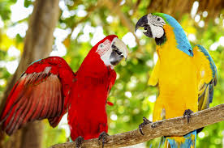
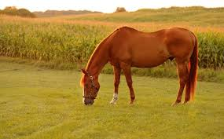
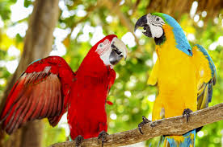
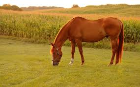

Our Mission:
Raise enough money to give these animals a good loving home.
What We Value:
The inherent worth of all companion animals.
The principles and goals of the no-kill movement, which we’ve pioneered since our founding in 1944.
The richness and complexity of the human-animal bond.
The power of humane education, which is the heart of our Mutt-i-grees® Curriculum. A social-emotional learning program developed in collaboration with Yale University’s School of the 21st Century, the Curriculum is the intellectual path to a no-kill future.
Our global network of rescue partners with whom we share our decades of experience and expertise.
Innovation, a hallmark of our more than seven decades of leadership in animal welfare.
The generous support of our friends and donors, and the vital role that we play in enriching the lives of companion animals and the people who love them.
Honesty, diversity, integrity, transparency, and sustainability.
Overview
A national and international leader in the no-kill movement, North Shore Animal League America is committed to saving and rehabilitating the lives of homeless companion animals and educating the public about the joys and responsibilities of rescue. Founded in 1944, we’re the largest, most comprehensive no-kill rescue and adoption organization in the world, with more than 2,000 shelter partners across the country and around the globe. Headquartered in Port Washington, N.Y., we rescue, nurture, and adopt nearly 18,000 pets annually into responsible, loving homes, plus assist in the adoptions of thousands more through our global partnerships. Over the years, we’ve introduced such lifesaving best practices as mobile adoption, offsite adoption, puppy mill rescue, national low-cost spay/neuter referral, humane relocation, and most recently, the Mutt-i-grees® Curriculum, a transformative humane education program based on social-emotional learning and the natural affinity between children and animals. Introduced in 2010, the Mutt-i-grees Curriculum is strengthening the human-animal bond for more than 3,000,000 students across North America, and creating future generations of informed and empathetic adopters..
 


